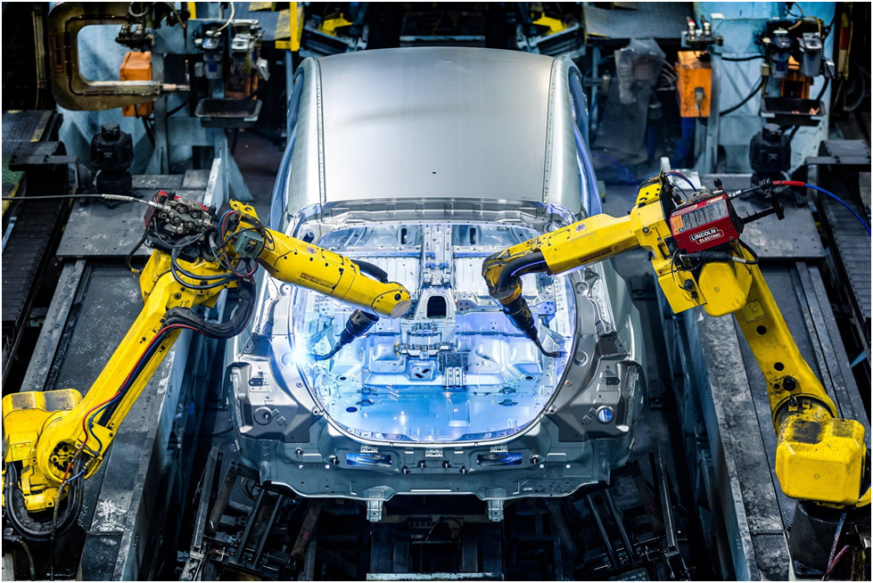

Industrial Applications of HMI
HMI systems are widely used across various industries to improve monitoring, control, safety, and productivity. They provide operators with real-time insight into machine and process behavior, enabling effective control and decision-making.
Manufacturing & Factory Automation
- Machine operation and status monitoring
- Production line control (assembly, packaging, conveyors)
- Fault detection and downtime reduction
- OEE and productivity visualization

Power & Energy
- Power generation and distribution monitoring
- Substation automation
- Load management and fault alarms
- Energy consumption and efficiency tracking

Water & Wastewater
- Pump and valve control
- Tank level and flow monitoring
- Treatment process visualization
- Alarm handling for leaks or failures
Oil & Gas
- Pipeline and terminal monitoring
- Refinery process control
- Safety system visualization
- Remote site monitoring

Food & Beverage
- Batch process control
- Temperature and hygiene monitoring
- Recipe management
- Compliance and traceability

Pharmaceutical & Chemical
- Batch and continuous process control
- Regulatory-compliant monitoring (audit trails, alarms)
- Quality assurance and validation

Automotive
- Robotic cell monitoring
- Assembly line control
- Diagnostics and maintenance interfaces

Infrastructure & Transportation
- Traffic control systems
- Airports, railways, tunnels
- Elevators and escalators monitoring